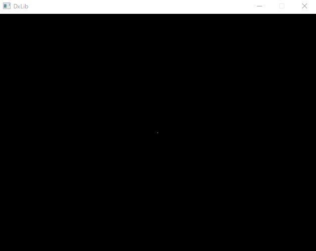

| タイトル | MVCモデル構築 | ||||
|---|---|---|---|---|---|
| 苦労した点 | Utilityクラスの処理・オブジェクトが複数に増えた際のアップデートの管理 |
||||
| 解決策 | Utilityクラスを作成して、クラス内でアップデート処理のテーブルの構造体を宣言して、 MVCモデルのオブジェクトの関数オブジェクトを格納し、std::mapでキーと構造体を登録して アップデート処理を行う際にmapに登録されている関数を呼び出す。 |
||||
| 使用言語・ソフト | C++ / Dxlibrary / Visual Studio 2017 | ||||
C++でのMVCモデル構築
自作ゲームを作成する際に、仕様変更が頻繁に起きてしまうため、コードを変更する際に修正する範囲が多かったためMVCモデルを学習
テストで作成したが、MVCモデルを実装したことにより、今後のプログラミングで可読性が高く、メンテナンスもしやすい設計をすることができた。
以下の画像は、メインループでUtilityクラスのViewUpdate関数を呼び出した時に実行した、CharViewのアップデート処理
